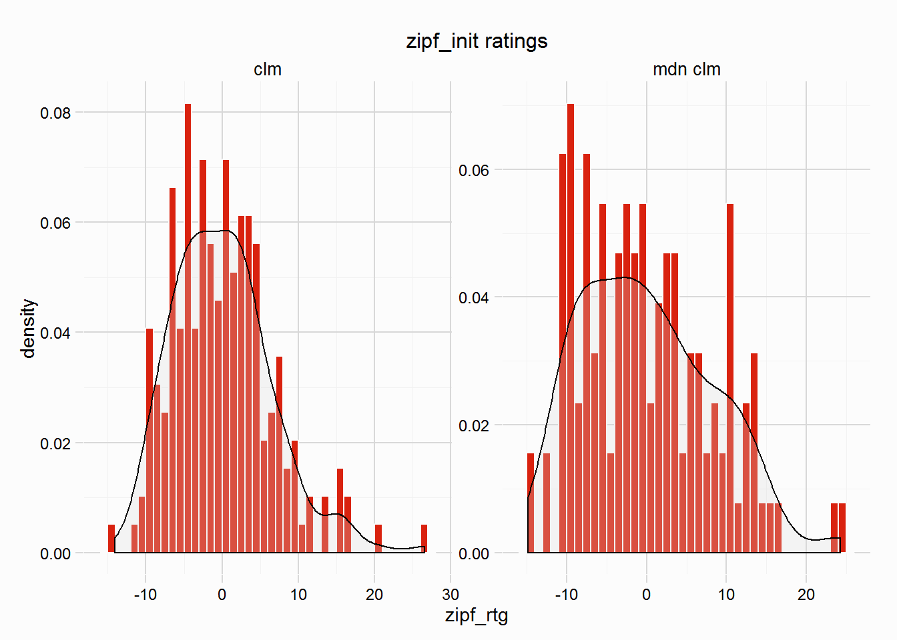

This vignette walks through the use of zipf_init, which initialises a handicap using a collection of races, in this case the gulfstream dataset (used in Data Preparation vignettes). There are certain steps necessary ahead of using zipf_init, these are covered in the Data Preparation vignette, but will be covered again here.
Load the dataset:
data(gulfstream)The gulfstream dataset contains 324 unique races, this is not a huge number, the more races the better. A look at the structure of gulfstream.
str(gulfstream)## 'data.frame': 2863 obs. of 17 variables:
## $ date : chr "01/01/13" "01/01/13" "01/01/13" "01/01/13" ...
## $ race : int 1 1 1 1 1 1 1 1 2 2 ...
## $ race_type: chr "mdn clm" "mdn clm" "mdn clm" "mdn clm" ...
## $ dist : int 6 6 6 6 6 6 6 6 6 6 ...
## $ surf : chr "dirt" "dirt" "dirt" "dirt" ...
## $ value : int 17500 17500 17500 17500 17500 17500 17500 17500 17500 17500 ...
## $ going : chr "fast" "fast" "fast" "fast" ...
## $ trainer : chr "nicholas gonzalez" "anthony pecoraro" "edwin t broome" "edward plesa jr" ...
## $ jockey : chr "jermaine bridgmohan" "joseph rocco jr" "gabriel saez" "elvis trujillo" ...
## $ j_clm : int 0 0 0 0 5 0 7 0 0 0 ...
## $ age : int 3 3 3 3 3 3 3 3 3 3 ...
## $ wgt : int 122 122 122 122 117 122 115 122 122 122 ...
## $ gate : int 6 1 8 7 5 2 4 3 2 4 ...
## $ pos : int 1 2 3 4 5 6 7 8 1 2 ...
## $ horse : chr "don'tgetmestarted" "dream of scipio" "beltram" "gold bitten tiger" ...
## $ fintime : num 72.4 74.2 74.5 74.7 74.7 ...
## $ sect_4f : num 47 47.1 47.4 48.4 47.4 ...In order to use some of the more complex functions (zipf_init, zipf_hcp) a certain amount of preparation is required. There are a number of variables needed for handicapping, these are:
The variables above should be pretty common in a racing dataset that you wish to calculate ratings from. In the gulfstream dataset we have all the above. Individual final times for horses might be a hurdle, but lengths beaten is a much more common variable, and as covered in the Data Cleaning vignette, the conv_margins can convert lengths beaten into final times.
A unique race id is required in the gulfstream dataset, but this can be created by concatenating the date and race variables. Obviously if a dataset contains races at more than one racecourse, it would be wise to include something about that: you can’t have two races being run at the same track, on the same day at the same time. Let’s create a variable called date_race:
gulfstream$date_race <- paste(gulfstream$date, gulfstream$race, sep = "_")The above date_race variable was the only one missing from the above list, but before handicapping can begin we need to calculate margins between horses that take into account the following:
The best (imo) way to do this is to use the package dplyr which takes advantage of the %>% pipe function from magrittr to calculate the necessary variables. The code below processes the gulfstream dataset, creating the necessary variables. It is explained in more detail below the code, the functions used from RcappeR are btn_sec, lbs_per_sec and diff_at_wgts:
library(dplyr)
new_gulfstream <- gulfstream %>%
group_by(date_race) %>%
mutate(btn_sec = btn_sec(fintime),
scale = lbs_per_sec(dist = dist, surf = "dirt"),
btn_lbs = scale * btn_sec,
diff_wgts = diff_at_wgts(btn_lbs = btn_lbs, wgt_carried = wgt))library(dplyr)gulfstream <- gulfstream %>%group_by(date_race)btn_sec = btn_sec(fintime),scale = lbs_per_sec(dist = dist, surf = "dirt"),btn_lbs = scale * btn_sec,diff_at_wtgs(btn_lbs = btn_lbs, wgt_carried = wgt))At this stage, the gulfstream dataset can be entered into zipf_init. First a word about the methodology for initialising the handicap.
The handicapping methodology uses a version of race standardisation first explained by Simon Rowlands, Head of Research at Timeform, specifically using Zipfs Law (hence the names of this family of functions, see also ?zipf_race and ?zipf_hcp).
Race standardisation looks at races of similar class/type and assesses the performance of one winner, by assessing the performance of winners in the different, but similar, races. A more detailed explanation can be found in the Handicap with zipf_race vignette, which walks through a simple example using the zipf_race function, which is called by zipf_init (and zipf_hcp).
Race standardisation uses past ratings from similar types/classes of race to assess a new race, in initialising a handicap there are no past ratings. So the zipf_init function group races together and assess performances using margins between horses - the diff_wgts variable created above. This process builds a skeleton handicap, from which further handicapping can, and should, be undertaken.
Below is a simple table explaining the various inputs to zipf_init:
| param | details | example input |
|---|---|---|
| races | a dataframe of races | new_gulfstream |
| group_by | name(s) of variables to group races by | "race_type" (could also include value) |
| race_id | name of variable to identify the unique races in the races dataframe |
"date_race" |
| btn_var | name of variable containing margins between horses in races dataframe |
"diff_wgts" |
| .progress | plyr’s progress bar, useful when using on large datasets (>20k rows) as the function takes time to run | “text” |
So:
our_hcp <- zipf_init(races = new_gulfstream, group_by = "race_type", race_id = "date_race", btn_var = "diff_wgts", .progress = "text")This small example, handicapping 324 races, split into 2 different race types (mdn clm, clm), took 15.3051231 seconds.
The output from zipf_init is a list (of class “rcapper_zipf_init”), there are print and summary methods for this class of object (though both do the same):
our_hcp##
## No. of races:
## 324
## Groups:
## clm
## mdn clmsummary(our_hcp)##
## No. of races:
## 324
## Groups:
## clm
## mdn clmThere is also a plot method, perhaps the most useful, which plots the distribution of ratings for each group, as we can see below the small samples in a couple of the race types shows the need for more races, or at least making sure groups are of a decent size.
plot(our_hcp)
The plot shows a distribution of ratings (in lbs) for the winners in the 324 races in new_gulfstream dataset. The mean will always be around 0, for all race types. The next step is to assign a standard rating for a winner of this type/class of race. These standards should reflect the difference in ability (in lbs) between the different race types, so a standard rating for Grade 1 winner is going to be far greater than that of a Maiden race, what these differences are is unknown - I am working on a solution to help find these differences.
Possible solutions to this issue is to use ratings from other handicappers to help guide this process, for example, Timeform (including Timeform US) or Beyer class pars.
Finally, merge_zipf_init function will merge the resulting ratings from zipf_init with the dataset used to calculate the ratings. Finally print the first 20 rows, showing the variables created in this vignette and the zipf_rtg for runners:
initial_hcp <- merge_zipf_init(zipf_list = our_hcp, races = new_gulfstream, btn_var = "diff_wgts")
# Let's have a look at the first few rows of our skeleton handicap
initial_hcp %>%
select(race_type, date_race, pos, fintime, btn_sec:zipf_rtg) %>%
head(15)## race_type date_race pos fintime btn_sec scale btn_lbs diff_wgts
## 1 mdn clm 01/01/13_1 1 72.43 0.00 17.00 0.0000 0.0000
## 2 mdn clm 01/01/13_1 2 74.18 1.75 17.00 29.7500 29.7500
## 3 mdn clm 01/01/13_1 3 74.54 2.11 17.00 35.8700 35.8700
## 4 mdn clm 01/01/13_1 4 74.65 2.22 17.00 37.7400 37.7400
## 5 mdn clm 01/01/13_1 5 74.68 2.25 17.00 38.2500 43.2500
## 6 mdn clm 01/01/13_1 6 75.08 2.65 17.00 45.0500 45.0500
## 7 mdn clm 01/01/13_1 7 75.77 3.34 17.00 56.7800 63.7800
## 8 mdn clm 01/01/13_1 8 78.60 6.17 17.00 104.8900 104.8900
## 9 clm 01/02/13_1 1 98.72 0.00 11.76 0.0000 0.0000
## 10 clm 01/02/13_1 2 98.75 0.03 11.76 0.3528 0.3528
## 11 clm 01/02/13_1 3 100.30 1.58 11.76 18.5808 18.5808
## 12 clm 01/02/13_1 4 101.08 2.36 11.76 27.7536 27.7536
## 13 clm 01/02/13_1 5 101.28 2.56 11.76 30.1056 34.1056
## 14 clm 01/02/13_1 6 118.72 20.00 11.76 235.2000 235.2000
## 15 mdn clm 01/02/13_2 1 73.65 0.00 17.00 0.0000 0.0000
## zipf_rtg
## 1 12.31
## 2 -17.44
## 3 -23.56
## 4 -25.43
## 5 -30.94
## 6 -32.74
## 7 -51.47
## 8 -92.58
## 9 15.15
## 10 14.80
## 11 -3.43
## 12 -12.60
## 13 -18.96
## 14 -220.05
## 15 3.56